Designing a UX-led digital studio for modern businesses
A complete digital experience for AX-Channels, designed to position the studio around UX, digital products and performance rather than traditional web development.
I designed and built a digital studio experience as a product — using UX strategy, information architecture, interface design and AI-assisted implementation to connect business positioning with user journeys.
01 / The challenge
From A Web-Design Service To A Credible Digital Studio
AX-Channels needed to evolve from a small web-design service into a more credible digital design studio.
The studio was already doing more than websites — interfaces, product work, brand systems — but its site said “Website designs that turn leads to clients”. The positioning had to widen without losing the plain, commercial clarity that made the old line work.
01The existing positioning focused heavily on websites.
02The new direction needed to communicate broader UX/UI and digital-product capability.
03It had to feel credible to businesses while staying understandable to non-designers.
04Services needed to be clearly differentiated from each other.
05The experience needed to work exceptionally well on mobile.
06The site had to convert visitors into enquiries, not simply act as a portfolio.
Before · the web-design positioning
axchannels.co.za
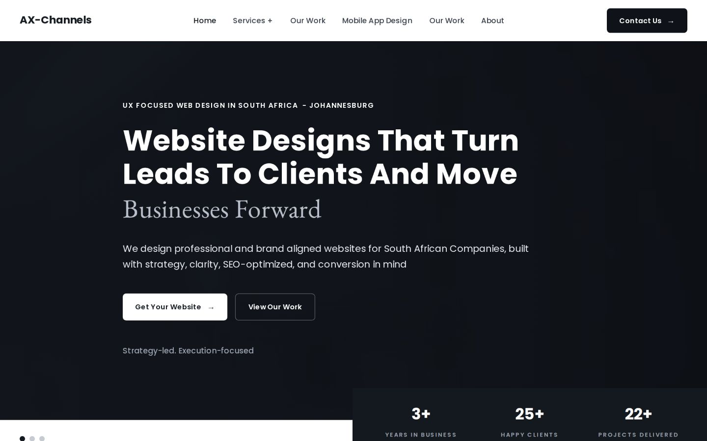
Before One service, sold as a deliverable. Six nav items, “Our Work” twice.After · a UX-led studio
axchannels.co.za
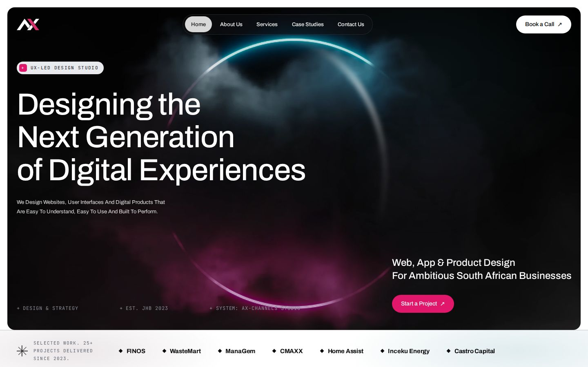
After A studio position, in plain words, with one next step.
Design question
How might we position AX-Channels as a UX-led digital studio while making the value of its services immediately understandable to prospective clients?
02 / Business & user goals
Design That Serves The Business And The Buyer
Four things the studio needed from the site, and six things a visitor needs to be able to do on it.
Business · 01
Positioning
Move beyond “web designer” toward a broader digital design studio.
Business · 02
Conversion
Turn website visitors into qualified enquiries.
Business · 03
Clarity
Make services, capabilities and engagement options easy to understand.
Business · 04
Credibility
A visual experience able to compete with more established studios.
User goals
Visitors should be able to…
Understand what AX-Channels does.
Decide whether the studio is relevant to their business.
Understand the services available.
See evidence of capability.
Understand what working together could look like.
Contact AX-Channels with minimal friction.
03 / Audience
Written For People Who Buy Design, Not People Who Do It
Primary
SMEs and growing businesses
Businesses that need better digital experiences but don’t have an internal product or design team.
Secondary
Founders, marketing teams & organisations
People looking for websites, digital products, UX/UI design or strategic design support.
UX implication
The audience isn’t made up of designers. The experience therefore prioritises clarity and business outcomes over design terminology.
04 / Research & competitive review
Five Patterns From Studios Worth Competing With
A focused reference review across digital, UX/product and web studios, local and international — not an exhaustive competitor audit.
References that shaped specific sections:Stodio · hero anatomyWhite Wall · numbers panelTrionn · interaction layerGEMIS Studio · accent & mono labels
Pattern 01
Strong studios lead with a point of view
Before listing services, they say what they believe about design.
Implication for AXThe homepage opens with a studio statement — “We design digital experiences around people and business” — before a single service card.
Pattern 02
Case studies act as proof
The strongest sites don’t claim quality; they demonstrate it.
Implication for AXA belt of real project names sits directly under the hero, and every project is labelled client work, concept or exploration.
Pattern 03
Service architecture matters
Visitors need to know exactly what they can hire the studio for.
Implication for AXFour named services, each with its own page, plus a “Which one do you need?” picker written from the client’s situation.
Pattern 04
Visual differentiation is intentional
Typography, spacing, motion and composition create recognisability.
Implication for AXOne typeface, one accent, one ring artwork and one spacing token — used the same way on every page.
Pattern 05
Mobile is not an afterthought
The mobile experience carries the same hierarchy as desktop.
Implication for AXEvery section was designed for 390px as well as 1440px, and a dedicated mobile QA pass ran before launch.
05 / Information architecture
Built Around The Four Questions A Client Asks Before Getting In Touch
Home
About /about
Services /services · overview + picker
Website Design & Development
Digital Product Design
UI/UX Design & UX Strategy
Brand Identity Systems
→ “Can you solve my problem?”
Case Studies /case-studies · 7 projects, filterable→ “Have you done this before?”
Contact 3 drawers, from any page
Discuss a project
Partner with us
Just want to say hi
→ “How can I work with you?”
The architecture was designed around the questions a prospective client needs answered before making contact.
What do you do?
Answered in the hero and studio statement — before the fold ends.
Can you solve my problem?
Answered by the four service pages and a picker that starts from the situation, not the service name.
Have you done this before?
Answered by the work belt, selected work and case studies.
How can I work with you?
Answered by the five-stage process, published pricing, FAQ and enquiry drawers.
First build · 26 Aug
WorkCapabilitiesApproachInsightsJohannesburgStart a Project page
Seven destinations, two of which had nothing to put in them yet.
Shipped · 27 Sep
AboutServices ×4Case StudiesContact drawers
An empty Insights section undermines credibility more than no Insights section, so it waits until there is writing to fill it. Contact became a drawer so enquiring never means leaving the page you were reading.
06 / UX strategy
Five Principles, And Where Each One Shows
Principles only earn their place if you can point at the screen where they changed something.
01
Clarity over complexity
Services and value propositions are understood without specialist terminology.
Where it shows“We design websites, user interfaces and digital products that are easy to understand, easy to use and built to perform.”
02
Proof before persuasion
Show work and evidence before making large claims.
Where it showsSeven project names in the belt directly under the hero.
03
Progressive disclosure
The homepage introduces the studio; deeper pages carry the detail.
Where it showsOne card per service on home; a full page per service behind it.
04
Low-friction conversion
From discovering a service to starting an enquiry without unnecessary steps.
Where it showsEvery “Start a Project” opens the same short drawer in place — there is no contact page to travel to.
05
Responsive-first thinking
Designed around mobile usage rather than shrinking the desktop layout.
Where it showsA single pill CTA sits beside the menu on phones at all times.
07 / Wireframes & exploration
Five Homepages In Five Weeks — What Each One Taught
The direction was explored in high fidelity, in code. Every screen below is rendered from the project’s own commit history.
Exploration 01
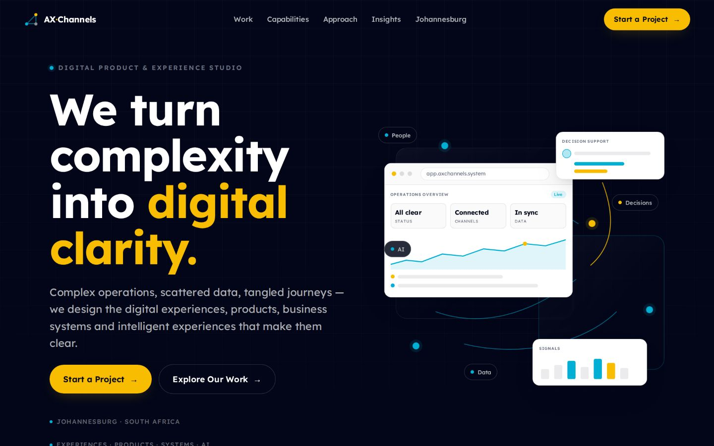
01 · Point of view26 AUG
“We turn complexity into digital clarity.”
Initial
A “digital product & experience studio” with an illustrated operations dashboard.
Problem
Abstract claims. The visual illustrated a product that didn’t exist, and “business systems and intelligent experiences” isn’t how an SME describes its problem.
Decision
Keep the ambition, lose the abstraction: say what gets designed, in the client’s words.
Exploration 02
02 · Existing direction16 SEP
“Website designs that turn leads to clients.”
Initial
The studio’s existing web-design positioning, implemented as designed.
Problem
Clear and commercial — but it boxed the studio into websites. The nav listed “Website Design” and “Mobile App Design” as pages and “Our Work” twice.
Decision
Broaden the position; fold every capability under one Services entry.
Exploration 03
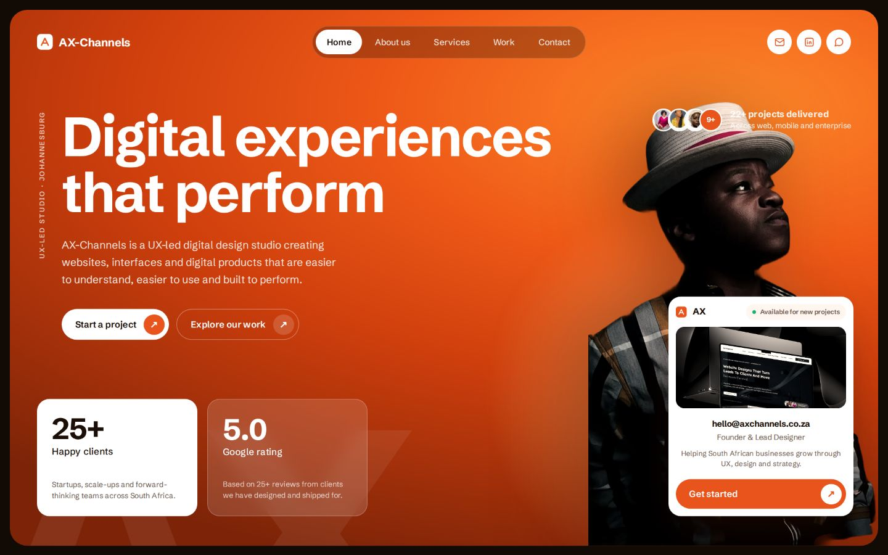
03 · Visual impact18 SEP
“Digital experiences that perform.”
Initial
A loud, editorial hero: saturated orange, a large portrait, stat cards.
Problem
It prioritised visual impact and pushed the value proposition down; the orange belonged to no part of the AX identity.
Decision
Return to the brand’s own world — ink, teal and magenta — and let the words lead.
Exploration 04
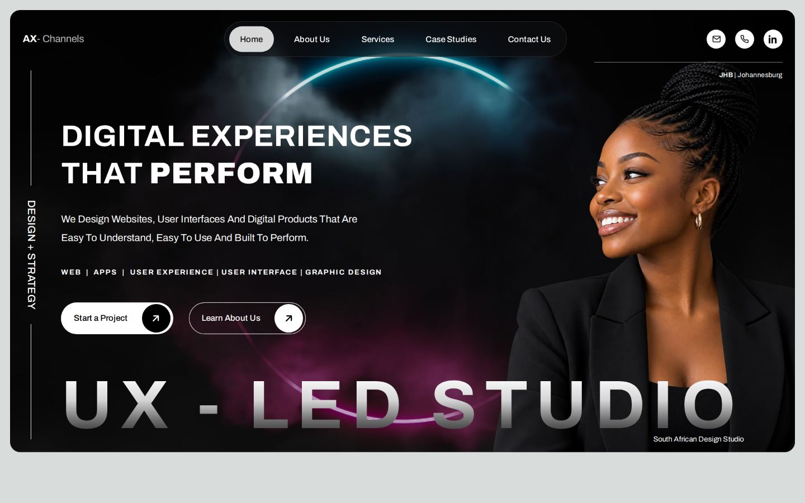
04 · Figma design, built20 SEP
The Figma homepage, implemented to the pixel.
Initial
The 1920px Figma artboard, built as drawn: display wordmark, portrait, social icons.
Problem
Three things competed with the proposition — the wordmark, the portrait and the icons, which sat exactly where a call to action belongs.
Decision
A compact one-line masthead: slim menu, and “Book a Call” replaces the social icons.
axchannels.co.za
05 · Shipped27 SEP
Hierarchy first, atmosphere second.
Initial
Everything from 01–04 that worked: the ring artwork, the plain sentence, the pill CTA.
Problem
Early explorations prioritised visual impact but pushed the value proposition too far down the page.
Final
The hierarchy was revised to establish what AX-Channels does before introducing supporting visual elements.
08 / Visual design system
One Typeface, One Accent, One Rhythm
Every value below is a live token in the shipped CSS. Service pages invent no new tokens — they rearrange these.
Primary typefaceVariable · 100–900
Archivo
Headings 500, title caseEmphasis 700–880Body 400 · 1.6Tracking −.02em on display
A grotesque with enough width axis to set a 166px display line and a 12px chip from one file. Headings stay at weight 500 — the accent word does the shouting, not the weight.
Micro-labelsJetBrains Mono
UX-Led + Design Studio · JHB 2023
Mono, uppercase, wide tracking — for eyebrows, breadcrumbs, metadata and figures. It marks “system information” so it never gets read as copy.
Type scaleDesign px at 1920 → fluid clamp()
--fs-h171px · 34 minDesigning the Next Generation
--fs-h255px · 27 minServices Built On UX, Not Decoration
--fs-h440px · 23 minDiscuss A Project ↗
--fs-lg24px · 16 minWeb, App & Product Design For Ambitious South African Businesses
ColourCore palette, as published on the Brand Identity page
Ink
Ink#0A0A0A
Headings on light, primary pills.
Night
Night#1D1E24
Dark blocks, hero base.
Teal
Teal#006275
The ring’s upper glow.
White
White#FFFFFF
The page. Content lives here.
Accent ×2
Accent#E0176B · #FF3D8A
One per heading. Deep on light (4.7:1), bright on dark (5.7:1).
--glow-teal0, 98, 117
--glow-mag62, 18, 41
--muted-2#73767A · darkened to AA
--muted#697080 · card body
Both glows are sampled from the hero artwork, then reused as ambient washes on the white sections so the whole page shares the hero’s world. The accent was split into two tokens once contrast testing showed one value couldn’t pass on both grounds.
--gutter = --shell + --block-pad. The inset that places the logo inside the hero is the same inset every section, card and panel starts from — so masthead, hero copy and section headings share one vertical line.
Spacing--section-space · stepped
≥ 1440140
1024–1439120
768–102396
480–76780
< 48072
One gap per break. The section below a break carries the whole gap; the one above closes at zero — so the space between any two sections is one value, never a sum of two. This case study uses the same token.
ComponentsLive — rendered with the system’s tokens
Navigation
HomeServicesCase Studies
A glass pill on the hero. Below 1100px it becomes a panel; the CTA stays outside it.
Buttons
Start a Project ↗See Our Work ↗
Every button is the hero’s pill: one height, one padding, one radius. Accent is reserved for the primary action.
Service card
UX · Led process01Website Design & Development
ResponsiveUI/UXCMS
Accent hairline on top draws in on hover; chips list what is included.
Case-study label
Client ProjectConceptExploration
Every project says what it is, so concept work is never mistaken for client delivery.
Form field
you@company.co.za
Underline fields, 16px text so iOS never zooms, labels that say “required” in words.
Section head
Why AXStatement sits opposite, on a shared baseline
Heading holds the content line; the statement sits opposite and stacks left under 900px.
--dur-fast · .22s
Micro-interactions: hovers, pills, focus.
--dur-med · .45s
Component transitions: nav panel, drawers.
--dur-slow · .85s
Editorial reveals on scroll. Off under reduced motion.
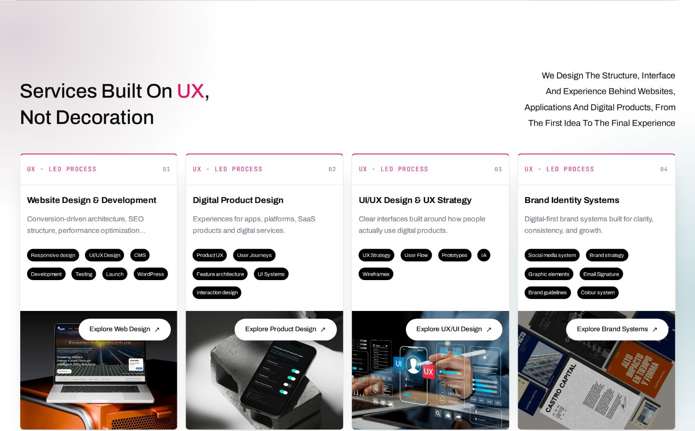
Components in context Section head, service cards, chips and pills on the homepage
09 / The final experience
The Homepage, As A Story In Four Beats
Scroll the page inside the frame, or jump to a beat. Only the four areas that carry the argument are annotated.
axchannels.co.za — Home · 1440px
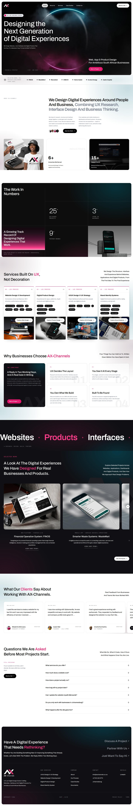
Scroll inside ↕
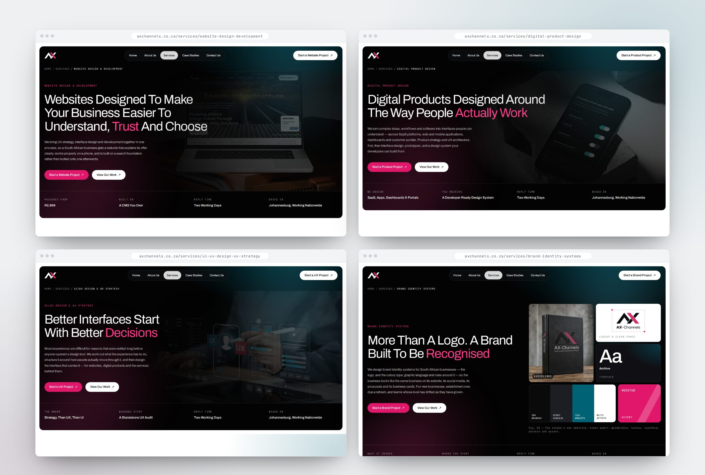
Service pages Four services, one shell — each hero answers “what is this and who is it for?” in one line
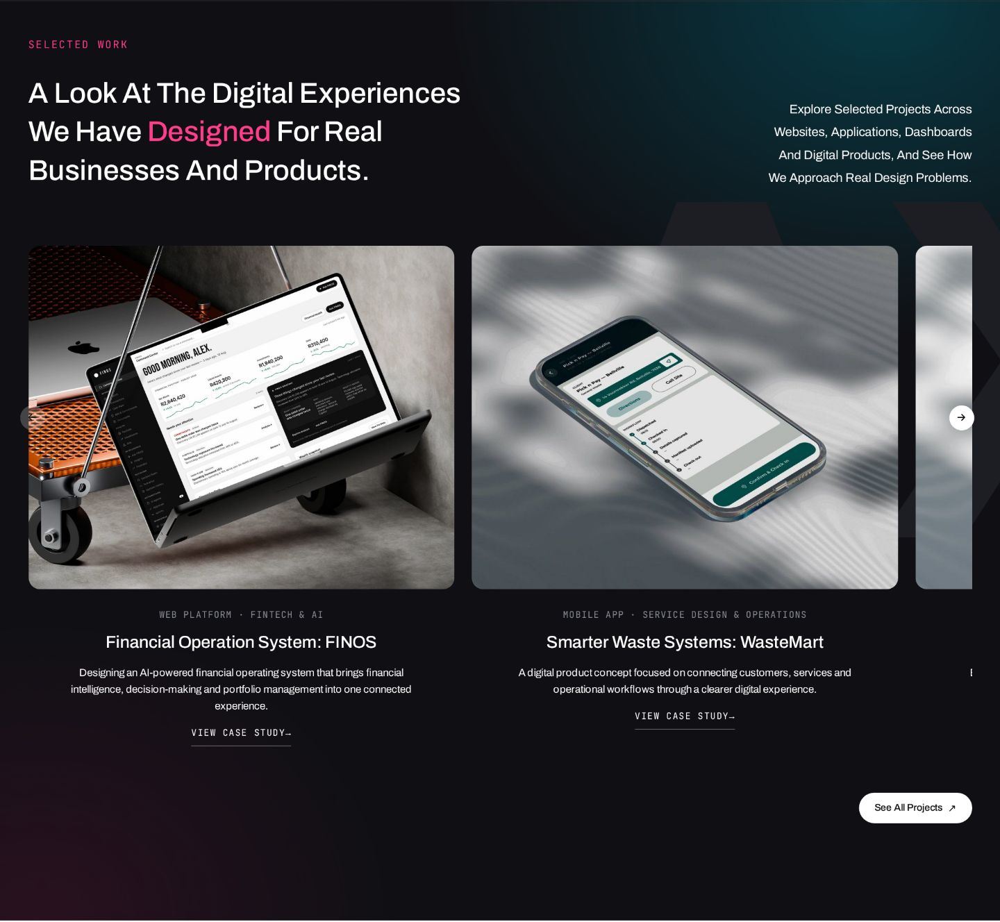
03 · Proof Selected work on the dark band
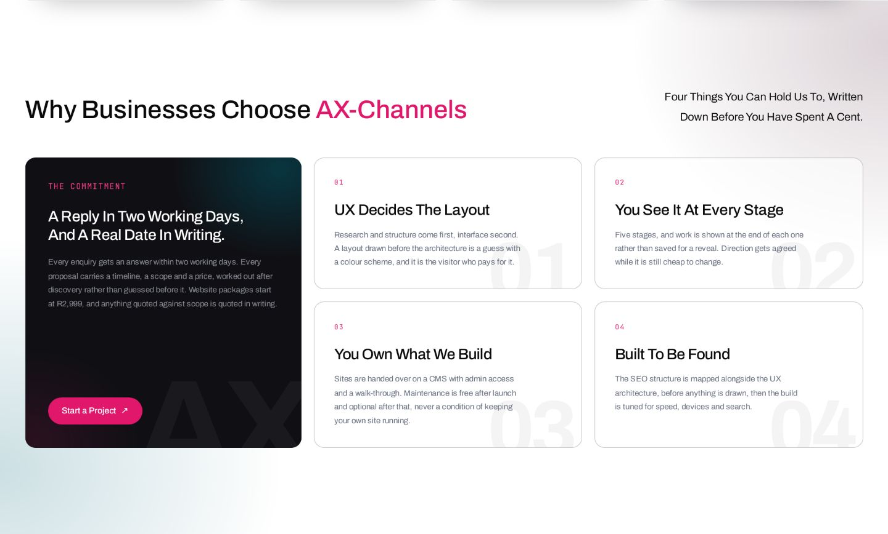
Credibility Four written commitments, not adjectives
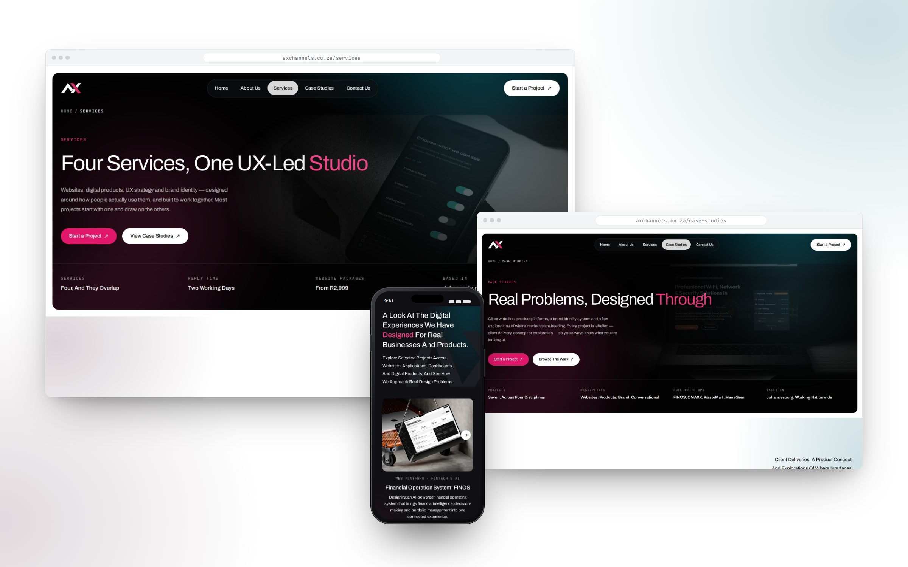
Beyond home Services overview · Case studies · Selected work on mobile
Live prototype / The real build
Don’t Take The Screenshots’ Word For It — Use It
All eight pages, the navigation, the enquiry drawers and the FAQ — running inside this page. Switch devices to see each layout at its true width.
Tip: try “Start a Project”, the menu on mobile, and the “Which one do you need?” picker under Services.Forms open your email app — nothing is sent from here. Services overview ↗
10 / Key UX decisions
Six Decisions That Did The Heavy Lifting
Each one: the problem, the call, the reason, and what actually shipped.
Decision 01
Services were separated by user intent rather than internal capabilities.
Problem
Clients arrive with a situation (“my site doesn’t convert”), not a service name.
Decision
A “Which one do you need?” picker, written as four situations that route to four services.
Reason
Nobody should have to learn the studio’s vocabulary to find the right door.
Result
Shipped on the services overview, with a fallback line: “Not sure? Ask — we reply within two working days.”
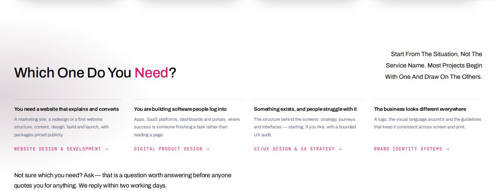
Decision 02
Case studies were positioned as evidence rather than decoration.
Problem
Portfolio grids read as mood boards; mixing concept and client work quietly erodes trust.
Decision
Real project names directly under the hero; every card labelled Client Project, Concept or Exploration.
Reason
Proof before persuasion — and honest labels are themselves a credibility signal.
Result
A filterable case-studies page of seven projects, each saying which kind it is.
Client ProjectConceptExploration
“Client deliveries, a product concept and explorations of where interfaces are heading. Each card says which.”
— Case studies page, section statement
Decision 03
Pricing was exposed where appropriate to reduce uncertainty.
Problem
“Contact us for a quote” is where SME buyers leave — they can’t tell if they can afford to ask.
Decision
Three website packages published with split-payment options; product, UX and brand work openly “quoted against scope”.
Reason
Repeatable work can be priced; bespoke work shouldn’t pretend to be.
Result
R2,999 · R5,999 · R8,999, each payable over three months.
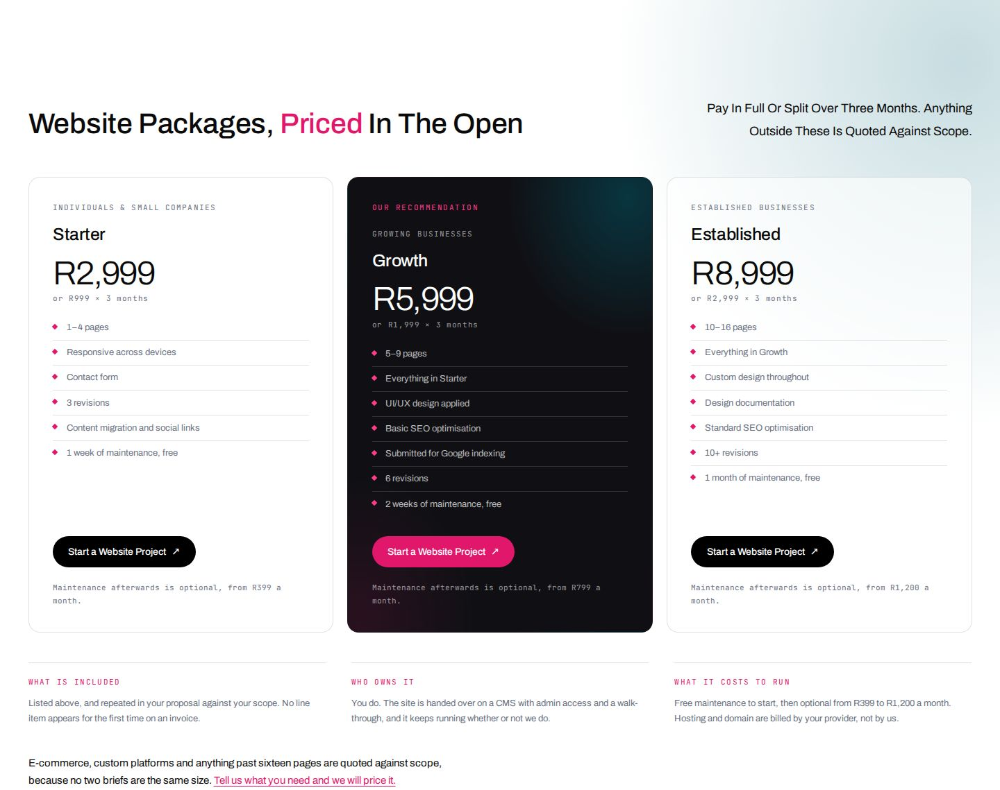
Decision 04
The mobile navigation was simplified around the highest-value journeys.
Problem
On a phone the primary action disappeared behind the menu.
Decision
Five destinations in the panel; the “Book a Call” pill stays outside it, always visible.
Reason
The one action that matters most shouldn’t take two taps.
Result
Logo · CTA · menu — the whole mobile masthead.
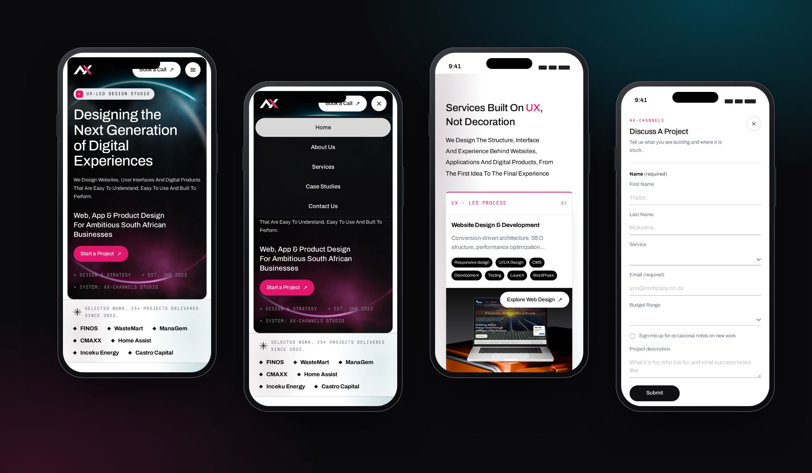
Decision 05
CTA language moved from generic contact to action-oriented messaging.
Problem
“Contact Us” asks the visitor to do the work of deciding why.
Decision
Name the action and match it to the page: “Start a Website Project”, “Start a Product Project”, “Start a UX Project”, “Start a Brand Project”.
Reason
A specific verb sets a specific expectation — and a shorter form.
Result
Three closing routes for three intents, and a form that says “nothing is sent until you press send”.
Contact UsStart a Project
Get Your WebsiteStart a Website Project
Social iconsBook a Call
Contact form pageDiscuss a project · Partner · Say hi
Decision 06
Motion was used to reinforce hierarchy rather than compete with content.
Problem
Early experiments — an animated glow ring, pointer-driven colour in the hero — pulled attention away from the words.
Decision
Three duration tokens, and motion only where something changes: entrances, line reveals, counters, hovers, drawers. Only transform and opacity animate.
Reason
Motion should tell you what just changed, not ask to be looked at.
Result
Motion is additive: with prefers-reduced-motion or no JavaScript, pages render complete and static.
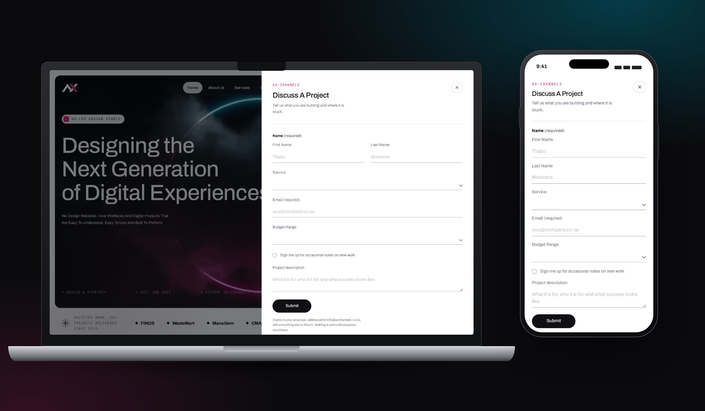
Conversion The project drawer on desktop and mobile
11 / Responsive design
Restructured For Each Screen, Not Shrunk
Rather than scaling the desktop interface down, the mobile experience restructures navigation, content density, typography and interaction around smaller screens.
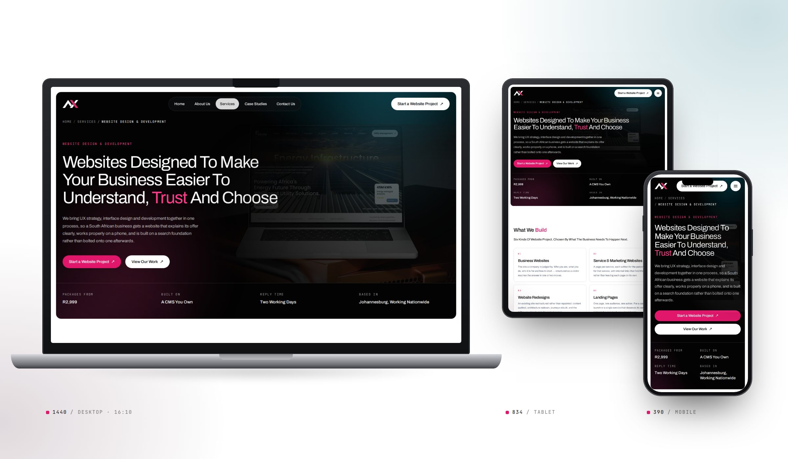
Navigation
Pill → panel under 1100px
The glass pill leaves the row to become a full-width panel; the primary CTA stays in the masthead.
Hierarchy
Statements return to the left
Below 900px each section head stacks, and its right-aligned statement returns left — ragged-left text is hard to read narrow.
Rhythm
Five spacing steps
Section gaps step 140 → 120 → 96 → 80 → 72, chosen per layout rather than scaled linearly.
Type
Clamped, with floors
Every step is fluid between a readable minimum and its 1920px design size, so nothing drops below 11px.
Content density
Carousels where grids won’t fit
Selected work becomes a paged carousel with large arrows; testimonials auto-slide.
Input
Thumb-first forms
16px inputs so iOS never zooms, 44px+ targets, and drawers that fill the screen.
12 / Development & AI workflow
AI-Assisted Build, Designer-Owned Decisions
I used AI-assisted development to accelerate implementation while retaining responsibility for UX decisions, visual direction, interaction design and quality control.
01
Strategy
Positioning, audience, IA and the four client questions.
Me
02
Figma
A 1920px homepage artboard, service-page designs and reference boards.
Me
03
AI-assisted build
Claude Code implements from the design and a written brief, one reviewable change at a time.
Claude Code · directed
04
QA
Every change reviewed in the browser against the design and the brief.
Me
05
Responsive refinement
Breakpoints, spacing and touch targets tuned device by device.
Me + AI
5wksFrom first commit to pre-launch QA
80Commits, each a reviewable design change
36Merged pull requests
0Frameworks — static, dependency-free HTML & CSS
What I owned
Positioning, copy direction and information architecture
Visual direction, the design system and every token value
Interaction design, motion rules and accessibility calls
Accepting, rejecting or reworking every change
What AI accelerated
Turning designs and briefs into semantic HTML/CSS
Repetitive work across eight pages from one shell
Rapid variants when a section needed a second option
Audits I then verified — contrast, overlaps, mobile QA
13 / Testing & iteration
What Was Checked, And What It Changed
Pre-launch QA across desktop, tablet and mobile. Most items below produced a change in the code.
AccessibilityFixed
Grey text failed contrast
Card eyebrows and testimonial roles darkened to 4.6:1 (#b4b8bf → #73767a) to meet WCAG AA.
AccessibilityFixed
One accent couldn’t pass twice
Split into #e0176b for white grounds and #ff3d8a for dark.
MobileFixed
iOS zoomed into forms
Inputs set to 16px; touch targets raised; form labels and errors tied to fields.
LayoutFixed
Sections overlapped on phones
The Approach section overlapped its neighbour on mobile; fixed, then all vertical rhythm moved onto one stepped token.
PerformanceFixed
A slow hero on mobile
Hero artwork served as WebP and preloaded with high fetch priority; cache-busted assets.
HierarchyFixed
Content line drift
Masthead, hero and sections started on different lines; all now begin on the logo’s inset.
NavigationChecked
Keyboard & skip link
Visible focus rings, a skip link, dialogs that close with Escape.
CTA flowsChecked
Every button goes somewhere
Each CTA opens a drawer in place, and falls back to a plain email link without JavaScript.
ResilienceChecked
Works without the extras
Motion is additive: with JavaScript off or reduced motion on, every page renders complete and static.
No moderated usability testing has been run yet. The findings here come from QA and design review, not from observing users. Usability sessions with SME owners are the first post-launch task — especially around whether the service picker routes people correctly.
14 / Outcomes
What Changed — And What Gets Measured Next
The site is pre-launch, so there are no conversion figures here yet. This section updates once there are.
New positioning established — from web design to a UX-led studio
Services reorganised into four, each with its own page
UX/UI offering clarified, with a bounded UX-audit entry point
Responsive system implemented on one stepped spacing token
New case-study architecture with honest project labels
Conversion paths simplified to one drawer from any page
An AI-assisted production workflow established and documented
—Enquiries per monthTracking from launch
—Enquiry conversion rateTracking from launch
—Mobile conversionTracking from launch
—Qualified leadsTracking from launch
—Service-page engagementTracking from launch
—Exit points by pageTracking from launch
A living product story: the dashes become numbers after launch.
15 / Reflection
What I’d Improve, And What It Changed In Me
What I would improve
The first iterations focused heavily on visual differentiation. Through refinement, I found that the stronger experience came from balancing visual identity with clearer service architecture and conversion paths.
Next time the IA and the four client questions come first, in wireframes, before any hero is styled — it would have saved at least two of the five homepages.
What this project changed in my approach
I increasingly treat studio websites as products rather than marketing pages. The design needs to communicate positioning, guide users through decisions and create measurable business value.
Working with AI made that sharper, not softer: when implementation is fast, the design decisions are the whole job.
Project summary
AX- Channels
Role
Product Designer / UX Strategist
Focus
UX Strategy · UI Design · Information Architecture · Responsive Design · AI-assisted Development
Delivered
8 pages · design system · enquiry flows · live prototype
A UX-led digital studio experience designed to communicate AX-Channels’ capabilities, establish a stronger market position and create a clearer path from discovery to enquiry.